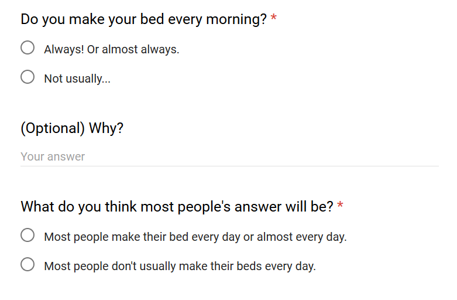

The questions no one cares about, but everyone's wondering
The question was:
Raw data available here.
This question occurred to me one morning while making my bed. I was already late and had to run out, but I just could not bring myself to leave my bed in such a chaotic state. I imagined myself coming home to sheets strewn about and finding death & decay abound. As I reflected about how my sense of self worth was intimately tied to the tidyness of my sheets, I began to wonder if I was alone in this experience.
I realized that I did not know a single person who makes their sheets every morning. All the people that I knew intimately enough to know this fact about them just happened to not make their bed. With everyone else, this wasn't really a question that ever came up. Was I just a rare enigma in this world (certainly one of my aspirations) or were there others who felt strongly about this too?
In fact, almost 50% of Ole's make their beds every morning!
This was very surprising to me, and statistically should be surprising to you too. Almost no one expected that other people regularly make their bed.
I almost always try to make a prediction about the results before I send out the survey. I started doing this after finding that some of the results looked obvious and that the survey didn't seem very insightful. But of course it will always seem obvious in retrospect. I try to come up with a hypothesis and think through whether the data will confirm or deny it. If I find that my belief in the hypothesis doesn't change regardless of the outcome, then something is broken with the design of the survey.
What I expected to find was that people who make their bed would predict that others probably do so too, and that those who don't would predict that they don't. This was what I called the Common Person hypothesis, that people believe that their actions are normal and that others are most likely to behave the way they do. Another hypothesis was that everyone who made their bed would predict others won't and vice versa. I called this the Extraordinary Masses - where everyone believes they are special.
It seems that neither is true. You can see in the table below that very few people believe others make their bed, regardless of whether or not they make their own bed.
| My Bed is Made | My Bed is Messy | |
|---|---|---|
| I Predict Made | 16 | 13 |
| I Predict Messy | 60 | 79 |
Which to me means that most people who don't make their bed feel like it's normal, while those who do make their bed are silent about it.
There's another reason I wanted to ask people to predict others' answers. This one comes out of the popular game EyeWire currently being developed at Princeton. It's a game where hundreds of thousands of players are entrusted with reconstructing brain data from raw scans, with the goal of doing for the brain what the human genome project did for DNA.
In a setting like that, you want to ensure that you're getting correct answers from a large group of people even if there aren't a lot of experts. In a paper called Finding Truth Even if the Crowd is Wrong, they talk about not just asking people what they think the answer is, but also what they think other people think.
Here's how it works. Suppose the question is
Is Philadelphia the capital of Pennsylvania?
If there aren't a lot of experts in the crowd, most would answer "Yes". Philadelphia sounds like an important city and most people know it's in Pennsylvania. These people would also likely predict that others would say "Yes".
Those who actually know that the capital is Harrisburg would answer "No". These experts would know that this is a common misconception and would thus predict that most answers would be "Yes". It is this discrepency between answer and prediction that gives us a way to extract the truth from the crowd.
This is a very different situation from the one in this survey, but I was absolutely fascinated by this idea that asking people to predict what others think the answer will be gives us this powerful extra insight, and it might be something to revisit in future surveys.
What I thought was most absolutely bizarre were the reasons why people weren't making their bed. I labelled each reason submitted with one of the following 4 categories. You can see the full data with the labels I applied here.
Moral obligation were those who, like me, felt that making the bed brought them some peace of mind. Hurry or lazy were mostly people who would do it if they had extra time or motivation. Lofted were people who found it too physically hard to make a lofted bed (a perfectly valid excuse).
Pay attention to the orange segment. That's ephemeral pleasure - this argument that "Why make the bed if it's just going to get messy again?"
I absolutely cannot understand this line of thinking.
Most things in life don't last, but they're still worth doing. We live in an eternal struggle against entropy. The world will always tend towards disorder. Our lives are short and our joy is transient. We do things not because they will last, but because there's value in creating a world we all want to live in.
I think it's worthwhile to bake a beautiful cake even if it will be gone over a meal. I think it's worthwile to get to know people intimately even if they'll be gone out of your life in less than a semester. I think it's worthwhile to build elaborate surveys even if it will all be buried one day.
I think it's worthwhile to make your bed even if it's going to be messed up again (if that makes you happy). I want you to know you're not alone.
– Omar